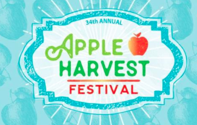
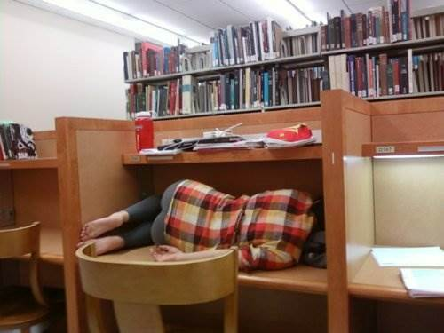

Things to do in Ithaca this weekend!

Apple Fest. Ithaca's premier event of the fall is returning this weekend for its 34th annual celebration! Head downtown to enjoy a variety of food and entertainment!
Homework. It's probably a good idea to start that homework that you've been putting off since school started. Gotta fake it 'til you make it, ya feel?

Sleep. You know you need it. It's prelim season, and let's face it, sleep is hard to come by in difficult times like these. Find a bed, or a nice comfy desk, to lay on and snooze away.
Catch up with Facebook's dogspotting page. Because puppies make the world go round.